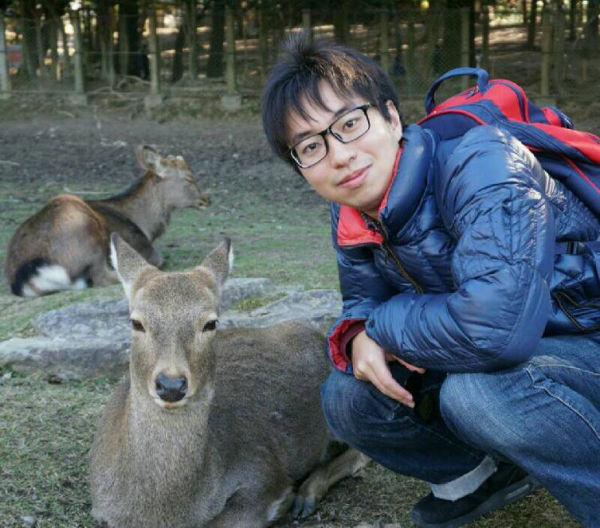

Norfadhilah Hamzah

Muhammad Huda

Khalid Alrashoud

Jag skickade ett e-postmeddelande till Yoshikawa sensei den 23 februari 2016, samtidigt deltog han på en konferens på Hotel Bangi Putrajaya med Dr.Tan Ee Sann. Intervjun gjordes samma dag, och Yoshikawa sensei föreslog att göra en teknisk-ekonomisk bedömning. Han föreslog att Tokimatsu sensei tilldelades en potentiell handledare. Jag tillbringade 3,5 år som student i Tokimatsu-laboratoriet. De erfarenheter jag fick från Tokyo Institute of Technology var annorlunda magisterexamen. Det är avgörande att bedriva forskning inom området expertis för att undvika beroende av handledaren. Dessutom är det viktigt att ha en grupp med små grupper med samma forskningsområde. Att vara doktorand i Tokimatsu-laboratoriet handlar om utmaningen med ansvar, självständighet, kultur, kunskap och resurs.Jag är glad eftersom jag är den första kvinnliga doktorandstudenten som tog examen från Tokimatsu Laboratory. Slutligen skulle jag tackar Tokimatsu sensei för hans villighet att bli min doktorandledare och för hans bidrag till min forskning.
Jag är Muhammad Huda, tidigare medlem av Tokimatsu Laboratory från september 2017-september 2019. Jag tillhör Energikursen att det är mycket sällsynt för utländsk student att anmäla sig till denna kurs. Jag är mycket stolt över att vara medlem i TokimatsuLab under de senaste två åren. Jag kommer ihåg att mitt dokument för registreringskrav som lämnats in en dag före tidsfristen efter Sensei ger mig bekräftelse för dessa. Detta laboratorium är mycket bra, även för utlänningar eller japanska studenter. Nästan av studenter som kommer från hela världen eftersom Tokimatsu sensei har idealism att bjuda in dem. Vi har internationell atmosfär för att dela all kunskap från varje student men Tokimatsu Sensei behåller japansk stil för att övervaka alla hans studenter. Japansk student i detta labb alsocan delar sina kunskaper och erfarenheter andra inte bara om akademiska utan också deras dagliga aktivitet och mycket hjälpsam om någon behöver hjälp för administrationsproblem.
Tokimatsu Sensei ger oss frihet att bestämma vårt forskning ämne även han inte riktigt experter om vår ämne. Men han försökte bidra och hjälpa våra framsteg för att bygga den goda forskningen. Han känner till all vår svaghet och försöker förbättra steg för steg. Han ger oss alltid prioritet och ande att ta hand om vår familj. Han kan hantera hela studenten. Han är mycket upptagen person som ansvarar för internationalisering av universitetet. Därför har du många praktikplatser utomlands från hans nätverk och delar din forskning till en viss konferens med laboratoriebudget. Konferensen är mycket användbar för att förbättra vår presentationsfärdighet som han alltid oroar sig för. Vi måste leverera vårt forskningsämne till alla människor så enkla som vi kan att de kan förstå vad vi gjorde. Tokimatsu sensei ger mig många råd om att vår forskning enkelt kan leverera till personer med effektiv presentation. För alla att gå med rekommenderas detta laboratorium mycket som vill förbättra sin förmåga själv. Du kan njuta av din studie och få möjlighet att lära dig många saker om Japan. Så tveka inte att kontakta Tokimatsu Sensei eller vår laboratoriemedlem för att gå med i detta laboratorium. Lycka till!
Bland ett brett spektrum av laboratorier, IchoseTokimatsu Laboratory för att bedriva min doktorsexamen. grad. När jag ser tillbaka kan jag säga att jag hade turen att få chanceto-studierna i detta laboratorium för följande studier: När det gäller någon som jag, som avslutade sin högskoleutbildning (kandidatexamen, doktorsexamen) vid tre olika universitet, hittade jag Utbildningsmiljö för Tokimatsu Laboratory Otroligt dyrbar. Jag hade fullständig frihet att arbeta med mina intressanta ämnen och som ett resultat gav den treåriga resan mig enorm studietillfredsställelse. I stället för att rusa studenterna att komma med snabba forskningsresultat, fokuserade professor Tokimatsualways på att tillhandahålla den idealiska plattformen genom att ge eleverna tillräckligt med tid att utveckla alla nödvändiga grunder i sina forskningsområden. Då jag började min forskning hade jag redan blivit mycket bekant med de avgörande detaljerna i mitt studierom. Till skillnad från det, till skillnad från många handledare, kräver inte professor Tokimatsu att hans studenter ska ställa in kärntimmar. Istället ger han dem friheten att dyka upp i laboratoriet vid den tid de vill. Han litar på samma gång sina elever att utföra sitt arbete och rapportera till honom regelbundet. Ett sådant fantastiskt sätt som gör det möjligt för studenter att utveckla självdiscipliner och förverkliga statusen som doktorand. Tokimatsu Laboratory ger en livlig studieupplevelse genom den internationella atmosfären som laboratoriet åtnjuter. Att interagera med andra studenter, som kommer från olika bakgrunder och olika samhällsskikt, har utökat min medvetenhet och hur jag ser på livet. När det gäller nackdelarna, även om Tokyo Tech är utrustad med de mest avancerade experimentella instrumenten och teknologierna, är det en nationaluniversitet med en mycket lång historia. Därför är det bättre att inte förvänta sig helt nya skrivbord och stolar. Vidare ligger Tokimatsu Laboratory i ett ganska avlägset område från Tokyo. Detta kan till viss del vara obekvämt för dem som bor i Tokyo och hatar lång tågpendling. Även om professor Tokimatsu också erbjuder sin tid - när det är möjligt på Ookayama-campus, som ligger i Tokyo. Jag kommer att värna minnena som vi hade i vår grupp oerhört. Jag hoppas på fler framgångar som kommer till professor Tokimatsuand och hans grupp.
Första gången jag fick kännedom om Tokimatsu Lab var genom introduktionen av professor Kurishima, Shibaura Tekniska Högskola, min första akademiska rådgivare. Vid den tiden var jag intresserad av att lära mig och studera lösningen för energi- och miljöproblem i Sydostasien. Jag lockade mig så mycket av Tokimatsu laboratoriemiljö där internationella studenter från hela världen inklusive Sydostasien arbetade hårt för att bidra till att lösa energi- och miljöproblem så att jag bestämde mig för att gå med i detta laboratorium.
I Tokimatsu Laboratory ges inte forskningstema av professorer eller seniorer, men det krävs att jag ställer in teman och bedriver forskning. Professor Tokimatsu kommer att kontrollera studentens framsteg i rätt tid och vägleda studenterna genom att påpeka och ge råd när forskningsriktningen inte är på plats. Tekniska problem som du står inför i din forskningsverksamhet måste lösas genom att genomföra litteraturgranskning och simuleringar av dig själv. Av detta skäl kommer det att vara svårt att slutföra din avhandling i detta laboratorium om du inte kan ha självkontroll och ansvara för din egen forskningsverksamhet.
Tokimatsu-laboratoriet är emellertid mycket generöst när det gäller att stödja studenter som aktivt söker möjligheter. I grund och botten kan du inte bedriva forskning om teman relaterade till utomlands om du inte har kopplingar och ekonomiskt stöd till utomeuropeiska universitetsfakulteter. Även det är svårt att skapa en anslutning och ekonomiskt stöd, professor Tokimatsu kommer att stödja dig så mycket som möjligt. Själv hade jag inga kontakter med utomeuropeiska fakulteter eller riklig budget, men med stöd av professorn hade jag möjlighet att stanna utomlands i totalt 7 månader för forskning.
Som ni ser är det ingen tvekan om att Tokimatsu Lab är ett tufft laboratorium om det inte är en student med ambition och ambition att uppnå dina mål. Men det är en bra miljö för studenter som vill utveckla sin egen väg. Om du är intresserad av Tokimatsu Lab, kom och besök oss. Vi välkomnar alltid ditt besök.
Jag kom i kontakt med professor Tokimatsu och hans laboratorium på ett symposium vid Uppsala universitet, där gjorde min doktorsexamen i elektroteknik. Jag lärde mig ett pågående samarbete mellan Uppsala universitet och Tokyo Tech och blev intresserad av att göra ett postdoktor på Tokimatsu Laboratory. Med en inbjudan från professor Tokimatsu kunde jag ansöka om ett sex månaders stipendium från JSPS (Japanese Society for the Promoing of Science). Jag var mycket tacksam för all hjälp med visumansökan, boende och sådan som jag gav mig av Sato på laboratoriet.
När jag kom till Tokyo fick jag ett varmt välkomnande från laboratoriets medlemmar. Det var studenter från många olika länder som arbetade med olika ämnen. Arbetstiden var flexibel och många laboratoriemedlemmar arbetade delvis hemifrån. När jag var van vid en svensk arbetsplats med fast lunch och kaffepauser, blev jag lite förvirrad av att folk ätit lunch på olika timmar, men jag kände mig hemma med kaffekroken på kontoret där jag kunde få en kaffe och en chatt.
Som postdoktor på Tokimatsu-laboratoriet hade jag mycket frihet. Mitt forskningsprojekt handlade om att balansera utmaningar från storskalig integration av förnybar energi i kraftsystemet. Jag bodde på International House på Ookayama campus och gjorde mycket av min forskning på Ookayama campusbiblioteket, innan koronavirusutbrottet tvingade alla att arbeta hemifrån. Jag arbetade mest ensam, men tack vare professor Tokimatsu fick jag möjlighet att träffas och presentera mitt arbete för vissa forskare inom mitt område vid en annan avdelning, och även för att gå till ett studiebesök på ett avancerat värmekraftverk. Det fanns också ett veckoseminarium på labbet, som tyvärr avbröts under en del av min vistelse på grund av till koronavirusutbrottet.
Min tid i Tokyo och på laboratoriet slogs ut helt annorlunda än jag hade förväntat mig på grund av koronavirusutbrottet, men jag är tacksam för min tid där och jag tar många glada minnen med mig.